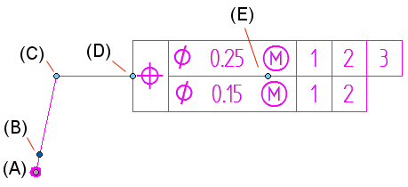
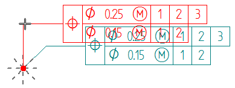
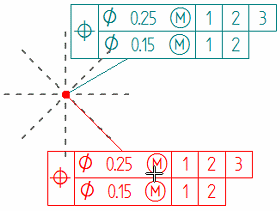
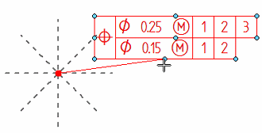
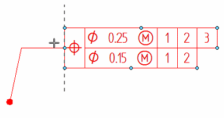
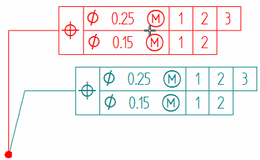
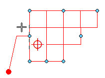
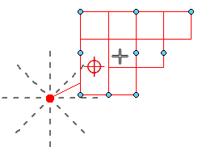

Manipulating feature control frames
Feature control frame edit handles
After you place a feature control frame, you can use the annotation edit handles to adjust its position and orientation. The handles are not visible until you select the feature control frame.

|
Feature control frame edit handles |
|
|
Location |
Purpose |
|
(A) Connection handle |
Moves the start point of the leader along the annotated element. Pressing <Alt> disconnects the leader and removes associativity. Pressing <Alt+Ctrl> disconnects the leader, yet preserves associativity. |
|
(B) Terminator handle |
|
|
(C) Leader edit handle |
Moves the feature control frame freely by changing the leader line length and orientation. Displays dashed snap lines to assist in orienting the annotation. Inserting vertices into the leader line adds edit points. With a break line:  Without a break line:  |
|
Without a break line, Alt+drag displays keypoints for you to snap the leader to a different connection point.  |
|
|
(D) Break line edit handle |
Lengthens or shortens the break line. Flips the feature control frame and break line to the opposite side of the leader. |
|
Alt+drag changes the break line connection point to the feature control frame. Displays keypoints for the break line to snap to. The new orientation of the break line is always perpendicular to the dashed vertical or horizontal line indicator.  |
|
|
(E) Move handle |
Moves the annotation by adjusting the leader length and orientation freely. The break line length and angle do not change.  |
 Displays a list of terminators for you to change the terminator type.
Displays a list of terminators for you to change the terminator type.Feature control frame snap points
You can change the point where the leader line or break line attaches to the feature control frame. Pressing Alt while dragging the break line edit handle or the leader edit handle displays the snap points so you can connect to them.
-
With a break line, eight snap points are visible along the frame perimeter.

-
Without a break line, one additional point is visible at the center of the frame.

How do I
Place a feature control frame or datum frameDefine feature control frame content
Example: Add symbols to a feature control frame
Save a feature control frame
Activate a saved feature control frame
Place a datum target
Learn more
Geometric tolerancingLook up more details
Feature Control Frame commandFeature Control Frame command bar
Feature Control Frame Properties dialog box
General tab (Feature Control Frame Properties dialog box)
Datum Frame command
Datum Frame command bar
Datum Frame Properties dialog box
General tab (Datum Frame Properties dialog box)
Datum Target command
Datum Target command bar
Datum Target Properties dialog box
General tab (Datum Target Properties dialog box)